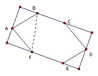

Let ABCDEF be a convex hexagon such that AB is parallel to DE, BC is parallel to EF, and CD is parallel to FA. Let RA, RC, RE denote the circumradii of triangles FAB, BCD, DEF respectively, and let p denote the perimeter of the hexagon. Prove that:
RA + RC + RE ≥ p/2.
Solution
The starting point is the formula for the circumradius R of a triangle ABC: 2R = a/sin A = b/sin B = c/sin C. [Proof: the side a subtends an angle 2A at the center, so a = 2R sin A.] This gives that 2RA = BF/sin A, 2RC = BD/sin C, 2RE = FD/sin E. It is clearly not true in general that BF/sin A > BA + AF, although it is true if angle FAB ≥ 120o, so we need some argument that involves the hexagon as a whole.

Extend sides BC and FE and take lines perpendicular to them through A and D, thus forming a rectangle. Then BF is greater than or equal to the side through A and the side through D. We may find the length of the side through A by taking the projections of BA and AF giving AB sin B + AF sin F. Similarly the side through D is CD sin C + DE sin E. Hence:
2BF ≥ AB sin B + AF sin F + CD sin C + DE sin E. Similarly:
2BD ≥ BC sin B + CD sin D + AF sin A + EF sin E, and
2FD ≥ AB sin A + BC sin C + DE sin D + EF sin F.
Hence 2BF/sin A + 2BD/sin C + 2FD/sin E ≥ AB(sin A/sin E + sin B/sin A) + BC(sin B/sin C + sin C/sin E) + CD(sin C/sin A + sin D/sin C) + DE(sin E/sin A + sin D/sin E) + EF(sin E/sin C + sin F/sin E) + AF(sin F/sin A + sin A/sin C).
We now use the fact that opposite sides are parallel, which implies that opposite angles are equal: A = D, B = E, C = F. Each of the factors multiplying the sides in the last expression now has the form x + 1/x which has minimum value 2 when x = 1. Hence 2(BF/sin A + BD/sin C + FD/sin E) ≥ 2p and the result is proved.

© John Scholes
jscholes@kalva.demon.co.uk
22 Oct 1998
Last corrected 21 Aug 03